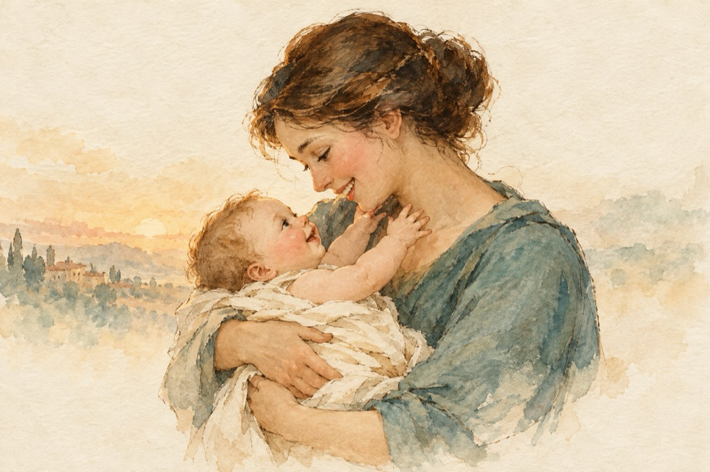

Bucuria părinților
Tu făptură îngerească
Flacăra unei iubiri
Rodul atâtor trăiri
Ai fost dat să se-mplinească.
Visul nostru s-a-mplinit
Toate-au căpătat un nume
Soarele a răsărit
Cu venirea ta pe lume.
Hai să ne privim în ochi,
Și un zâmbet să ne dai.
Să nu-ți fie de deochi,
Tu cred că-ai venit din rai!
Și-ai adus cu tine viață
Cu-n alai de îngerași,
Zâmbetul îți umple fața,
Și obrajii-mbujorați.
Întinzi brațele spre mamă,
Și gurița înspre sân,
Cu dragoste ea te cheamă,
Mângâindu-ți trupu-ți fin.
Să crești mare, dragul meu,
Tu comoara vieții noastre,
Să te-ajute Dumnezeu
Să-ai noroc și sănătate!
Vasile Groza